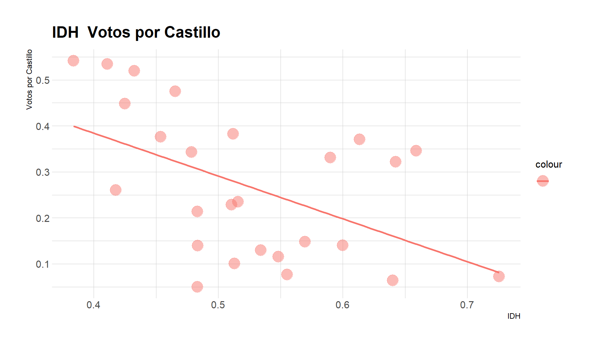
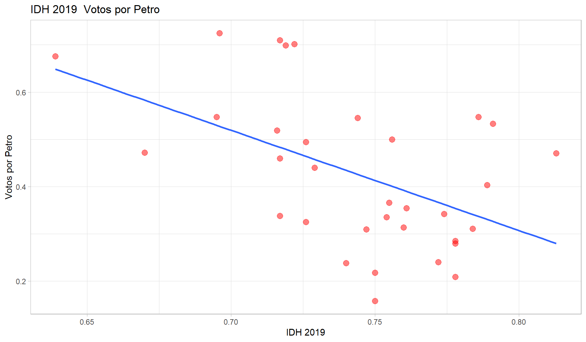

#getwd()
#setwd("")
library(rio)
dataVOTO = import("./data/s12/PVotos_CirElectoral_idh.xlsx")
#names(dataVOTO)
#str(dataVOTO)11 Regresión Lineal
11.1 PRIMERA BASE DE DATOS: ELECCIONES PERÚ (CASTILLO)
- IDH Y CASTILLO:
12 Modelo 1
modelo1 <- lm(VotosV_Castillo ~ IDH, data = dataVOTO)
summary(modelo1)
Call:
lm(formula = VotosV_Castillo ~ IDH, data = dataVOTO)
Residuals:
Min 1Q Median 3Q Max
-0.25650 -0.10446 -0.02506 0.13784 0.20256
Coefficients:
Estimate Std. Error t value Pr(>|t|)
(Intercept) 0.7566 0.1715 4.413 0.000185 ***
IDH -0.9311 0.3225 -2.887 0.008096 **
---
Signif. codes: 0 '***' 0.001 '**' 0.01 '*' 0.05 '.' 0.1 ' ' 1
Residual standard error: 0.1391 on 24 degrees of freedom
Multiple R-squared: 0.2578, Adjusted R-squared: 0.2269
F-statistic: 8.337 on 1 and 24 DF, p-value: 0.008096INTERPRETACION:
12.1 1. ¿Existe una relación de depencia entre las variables? ¿Y depende de X1?
H0: La variable independiente (
IDH) no tiene efecto sobre la variable dependiente (VotosV_Castillo)Al revisar el p-value (0.008096), el cual es menor a 0.05, rechazamos la H0. Por lo que a un 95% de confianza, el (
IDH) tiene impacto significativo / sí tiene un efecto / sí influye en (VotosV_Castillo). Así se determina que el “modelo1” es válido para predecir el porcentaje de votos válidos a Castillo en los departamentos del país a partir del IDH; es decir, existe una relación lineal entre ambas variables.
12.2 2. ¿Cuánto explica el modelo?
- La mejor recta graficada del “modelo1” de regresión lineal ayuda a predecir el 22% de la variabilidad total de la variable (
VotosV_Castillo) explicada por la variable (IDH). Por lo que podemos concluir que es un modelo bajo.
12.3 3. ¿Cómo Y depende de X 1?
COEFICIENTE:
- El porcentaje de votos válidos de Castillo va a ser igual a 0.7566 + (-0.9311)*IDH. En ese sentido, cuando el (
IDH) se incrementa en una unidad, el porcentaje de votos válidos de Castillo disminuye / se reduce en 0.9311 puntos porcentuales / 93%.
INTERCEPTO:
Cuando IDH toma el valor 0, el porcentaje de votos válidos para Castillo sería 0.7566.
Y = 0.7566 +(-0.9311)*X
Y = 0.7566 +(-0.9311)*IDH
summary(dataVOTO$IDH) Min. 1st Qu. Median Mean 3rd Qu. Max.
0.3838 0.4688 0.5125 0.5249 0.5849 0.7255 - ¿Qué sucede con la región que tiene el min de IDH? remplazar 0.3838 en –> Y= 0.7566 + (-0.9311)*IDH
Y1 = 0.7566 + (-0.9311)*0.3838
Y1[1] 0.3992438- Porcentaje de voto a castillo al 40%
12.4 Gráfica
#plot(VotosV_Castillo ~ IDH, dataVOTO)
#abline(modelo1, col = "red")
# GRÁFICO FACHEREX:
library(ggplot2)
library(hrbrthemes)
ggplot(dataVOTO, aes(x = IDH, y = VotosV_Castillo, color = "")) +
geom_point(size = 6,
alpha = 1/2) + xlab("IDH") + ylab("Votos por Castillo") +
ggtitle("IDH \ Votos por Castillo") +
theme_light() + geom_smooth(method="lm",
se = F) + # Se eliminan las bandas de confianza (se = standard error)
theme_ipsum()
INTERPRETACIÓN:
- Las regiones con mayor IDH votaron menos por castillo.
13 SEGUNDA BASE DE DATOS: ELECCIONES COLOMBIA (PETRO)
- IDH Y PETRO:
#getwd()
#setwd("")
library(rio)
dataCOLOM = import("./data/s12/Colombia2022.xlsx")
#names(dataCOLOM)
#str(dataCOLOM)str(dataCOLOM$`Petro (%)`) num [1:33] 0.24 0.547 0.47 0.499 0.314 ...str(dataCOLOM$`IDH-2019`) num [1:33] 0.772 0.786 0.813 0.756 0.76 0.778 0.717 0.719 0.729 0.716 ...14 Modelo 2
modelo2 <- lm(`Petro (%)` ~ `IDH-2019`, data = dataCOLOM)
summary(modelo2)
Call:
lm(formula = `Petro (%)` ~ `IDH-2019`, data = dataCOLOM)
Residuals:
Min 1Q Median 3Q Max
-0.25500 -0.11035 -0.02323 0.09892 0.22906
Coefficients:
Estimate Std. Error t value Pr(>|t|)
(Intercept) 2.0028 0.4968 4.032 0.000334 ***
`IDH-2019` -2.1193 0.6670 -3.178 0.003354 **
---
Signif. codes: 0 '***' 0.001 '**' 0.01 '*' 0.05 '.' 0.1 ' ' 1
Residual standard error: 0.141 on 31 degrees of freedom
Multiple R-squared: 0.2457, Adjusted R-squared: 0.2214
F-statistic: 10.1 on 1 and 31 DF, p-value: 0.00335414.1 INTERPRETACION:
H0: La variable independiente (
IDH-2019) no tiene efecto sobre la variable dependiente (Petro (%))Al revisar el p-value (0.003354), el cual es menor a 0.05, rechazamos la H0. Por lo que a un 95% de confianza el (
IDH-2019) tiene impacto significativo en (Petro (%)). Así se determina que el modelo2 es válido para predecir el porcentaje de votos válidos a Petro en las regiones del país colombiano a partir del IDH. Es decir, existe una relación lineal entre ambas variables.La mejor recta graficada del modelo2 de regresión lineal ayuda a predecir el 24% de la variabilidad total de la variable (
Petro (%)) explicada por la variable (IDH-2019). Por lo que podemos concluir que es un modelo bajo.
COEFICIENTE:
- El porcentaje de votos válidos de Petro va a ser igual a 2.0028 + (-2.1193)*
IDH-2019. En ese sentido, cuando elIDH-2019se incrementa en una unidad, el porcentaje de votos válidos de Petro disminuye/se reduce en 2.1193 puntos porcentuales.
INTERCEPTO:
- Cuando IDH toma el valor 0, el porcentaje de votos válidos para Petro sería 2.0028.
summary(dataCOLOM$`IDH-2019`) Min. 1st Qu. Median Mean 3rd Qu. Max.
0.6390 0.7190 0.7500 0.7439 0.7740 0.8130 Y2 = 2.0028 +(-0.9311*0)
Y2[1] 2.002814.2 GRÁFICA
#plot(`Petro (%)` ~ `IDH-2019`, dataCOLOM)
#abline(modelo2, col = "red")
# GRÁFICO FACHEREX:
library(ggplot2)
ggplot(dataCOLOM, aes(x=`IDH-2019`, y = `Petro (%)`)) +
geom_point(colour="red", size = 3, alpha = 1/2) +
xlab("IDH 2019") +
ylab("Votos por Petro") +
ggtitle("IDH 2019 \ Votos por Petro") +
theme_light()+ geom_smooth(method="lm",
se = F) # Se eliminan las bandas de confianza (se = standard error)
- Del mismo modo las regiones con mayor IDH votaron menos por Petro.